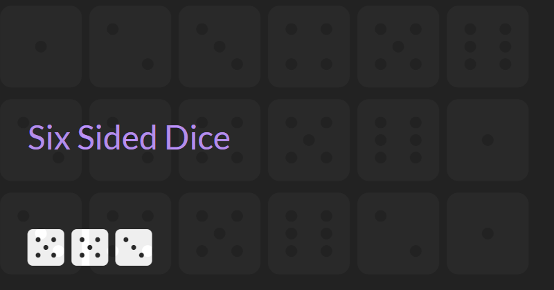

Hi, I'm Lee
Hi, I'm Lee. I'm a principal software engineer, architect, and advocate of software craftsmanship.
I started coding when I was 11 years old, writing programs in BASIC for the ZX Spectrum and BBC Micro, and have worked professionally in software development since 1995.
During my career, I've worked as a developer, team lead, architect, principal engineer, Scrum master, development manager, head of development, and CTO. I've been lucky enough to remain hands-on throughout my career and try to keep my development skills up to date.
I consider myself a polyglot programmer and have commercial experience leading teams and developing solutions using C#, TypeScript, Java, Dart, C++, Python, JavaScript, Delphi, and Ada. I also have some degree of familiarity with Julia, Swift, F#, Go, Clojure, Ruby, Kotlin, Rust, and Scala.
While I am proficient in most programming languages, I consider myself an expert in C#. I built my first ASP.NET web application at the beginning of 2001 using the public beta version of .NET 1.0 and have been continually involved in designing and building .NET applications using all version of .NET up to and including .NET 8.
This site is a work in progress. Check out the Blog section for my most recent thoughts or go to the Search page to look for something specific.